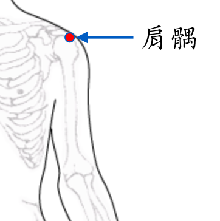

【穴位名稱】: 肩髃 (LI15)

【取穴位置】: 肩部三角肌上，臂外展或向前平伸時，當肩峰前外方凹陷處。《針灸甲乙經》：「在肩端兩骨間」；《千金要方·諸風》：「在兩肩頭正中」；《循經考穴編》：「膊骨端上兩骨罅間，舉臂平肩陷中 (一雲當微前些)，下直對曲肘縫尖，須擱臂縱或轉手插腰，緩緩下針。」
【針刺方法】: 垂臂肘向三角肌部斜刺1～1.5吋；或於上臂外展位時沿肱骨頭前內側向腋窩方向深刺1～2吋。艾炷灸3～5壯，艾條灸5～10分鐘。
回前頁